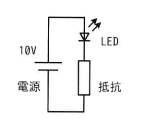

図のLED点灯回路において，LEDに10ミリAの電流が流れるように抵抗値を決定したときに，回路全体の消費電力に占めるLEDの消費電力の割合は何％か。ここで，LEDの順方向電圧は2Vとし，電源の消費電力は無視するものとする。
回路図：電源10V－LED（順方向電圧2V）と抵抗の直列回路
ア 20 イ 25 ウ 80 エ 100

ア：20
| 選択肢 | 内容 | 補足 |
|---|---|---|
| ア | 20 | 正解。LEDの消費電力20mW÷回路全体の消費電力100mW×100＝20% |
| イ | 25 | LEDの消費電力(20mW)を抵抗の消費電力(80mW)で割った値を誤って百分率にした場合の数値 |
| ウ | 80 | 抵抗の消費電力が回路全体に占める割合（LEDではなく抵抗側の割合） |
| エ | 100 | 電源電圧の値をそのまま百分率と誤認した場合の数値、または計算過程の誤り |